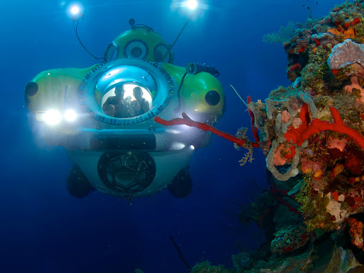

OCEANS
We live on an ocean world. There are five ocean basins: Arctic, Atlantic, Indian, Pacific and Southern.
But there is truly only one ocean and it spans all around the globe. To not understand our ocean is to not understand our planet.
Why Study the OceanT
Approximately 70% of Earth is covered by ocean
The Earth's surface is 29% land and 71% water. Of that water, 97% is found in the oceans.

Life started in the ocean
Life began as bacteria at least 3.5 billion years ago.
Scientists mostly agree that these single-celled organisms probably arose from the combining of chemicals spouting from hydrothermal vents on the sea floor.
Over billions of years and through the process of natural selection, these organisms evolved and diverged into the array of species from all domains of life on Earth that we see today.
The abundance of life in the ocean is enormous
230 thousand species of have been recorded in the sea. However that barely scratches the surface.
Scientists estimate that about 90% of organisms in the ocean have yet to be classified. There could be anywhere from 1-10 million in total!
Taxonomic diversity in the ocean also exceeds that on land. The entire animal kingdom is grouped into 36 phyla.
15 of which have species that can be found on land and 17 in freshwater. But 34 of them can be found in the sea. And that’s just the animals.
One litre of seawater can contain more than 20,000 different types of bacteria!
10-12% of humans depend on fishing and aquaculture for income
The worldwide fishing industry employs around 200 million people and generates around $2.5 billion per year for the global economy.
Fish is a staple diet for many communities, particularly in developing countries.
Aquaculture is essentially the practice of farming in the sea. Organisms that we farm and harvest through aquacultural practices include fish, shellfish and seaweed.
At least half of Earth’s oxygen comes from the ocean
Estimates vary enormously. Anywhere from 50 to 80% of the oxygen in the Earth’s atmosphere comes from photosynthetic organisms that live in the sea.
These organisms include both seaweed and microorganisms (bacteria and microalgae).
The ocean is an important carbon sink
Excessive carbon dioxide emissions of humans are trapping more heat from the sun which in turn causes global warming.
The ocean absorbs about 30% of these carbon emissions, which helps to slow down the change in climate.
Oceans hold the key to unlocking many scientific breakthroughs
All those marine organisms carry with them a hugely diverse array of mechanisms to meet their metabolic needs. Many of these mechanisms we have yet to understand.
In particular, marine organisms often have complex and effective ways to combat disease. There is therefore a lot of potential for marine science for the medical industry.
We have only explored around 5% of the oceans
As oceans make up most of the Earth’s crust, this means that most of the world remains unexplored. Who knows what discoveries have yet to be made!
It is part of a bigger 'global' ecosystem
The Earth is a highly connected place. What happens in the ocean effects what happens on the land. Fish may be eaten by birds. Birds may be eaten by bears, etc.
At the coast, two worlds collide. Coastal habitats include sand banks, mangrove forests, salt marshes, cliff edges and more.
All of which are a haven for a unique community of organisms that are dependent on both the land and the sea.
...And because it is UNDER THREAT
Over the last few decades the ocean has seen huge declines in wildlife due to anthropogenic disturbances.
Threats include rising temperatures, pollution, overfishing, ocean acidification and more.
Tackling these problems is of the utmost priority for the continued flourishing of our planet including our own species.
There has never been a more important time to support marine conservation!
Why is the Earth so Wet?
/https://public-media.si-cdn.com/filer/3f/02/3f0239d4-3911-4db9-b592-36b9c597a92c/earlyearth.jpg)
Early Earth was a volatile place that was frequently bombarded by asteroids. These asteroids brought with them a very particular chemical. A unique compound made from hydrogen (the first element in the universe) and oxygen (formed from nuclear fusion reactions in stars). We call this chemical water.
Early Earth was far hotter than it is today due to high volcanic activity and the release of energy from swelling pressure inside the planet. At such high temperatures, water remained as gas for a long time. The gravity of the Earth prevented this gas from leaving the atmosphere.
Overtime the Earth's crust began to stabilize, and much of the heat dissipated into space.
The Earth gradually cooled and around 3.8 billion years ago, temperatures reached below 212oF.
This caused the water vapour in the atmosphere to condense into rain. Over millions of years, this rain filled the basins which are now our oceans.
For the time being, Earth remains the only known planet to have stable bodies of liquid water on its surface.
What Makes Up Sea Water?
Water
The chemical formula for water is H2O. This means that each water molecule consists of one oxygen atom bonded to two hydrogen atoms.
Because it is by far the most abundant liquid on the Earth's surface, it is easy to take water for granted. But it is actually quite unusual for a liquid.
It has a unique set of properties which make it perfect and essential for life.

Water is transparent. This enables light to easily penetrate it.
This is important for all aquatic organisms that rely on vision.
But even more significantly, it means that high amounts of photosynthesis can take place in water, allowing plants, algae and bacteria to use the sunlight to build organic molecules that support the entire marine ecosystem.
Temperature change in water is slow. It takes a lot of energy to change a body of water by a just a small amount.
This makes the oceans a relatively stable environment as marine organisms don’t have to deal with rapid temperature fluctuations compared to land organisms.
A desert may reach 38oC in the day and fall to -4oC at night. Ocean temperatures normally don’t fluctuate more than 1 degree over a 24 hour period.
It also takes a lot of energy to evaporate water. This helps to prevent the risk of the oceans rapidly drying up.
Unlike other liquids, water expands when it freezes. This means frozen water is less dense and therefore floats on top of liquid water.
This is important for the survival of polar and many freshwater organisms because the layer of ice helps to trap in the remaining heat.
Water molecules are "sticky." In other words, their atomic structure means they have forces that keep them slightly attracted to one another.
This provides a body of water with a certain degree of structural integrity.
It allows water to move up a plant as the molecules will both adhere to the walls of the plant vessels and to each other, enabling them to “pull one another up the plant”.
It also means that there is a community of small organisms (such as pond skaters) that can support themselves on the surface of water without sinking.
Water is an excellent 'solvent'. This means that many substances can easily dissolve in it.
This allows the ocean to store many molecules that are essential for life, such as nitrates and various forms of carbon.
It also means that important metabolic reactions that happen in all organisms take place in watery solutions inside the cells.
Water is a moderately reactive molecule. It is an important ingredient for many of the reactions that organisms depend on, including photosynthesis.
Salt

Salt is solid crystals of sodium chloride (NaCl). However, when in liquid, it dissolves into sodium ions (Na+) and chloride ions (Cl-).
Most sea salt actually comes from the land. Rain contains a small amount of dissolved carbon dioxide making it slightly acidic.
This slowly erodes rocks, causing salts and other minerals to leach out and enter the waterways that flow into the ocean.
Hydrothermal vents and underwater volcanoes also contribute to the amount of salt in the ocean.
Salt is important for organisms as it is involved in metabolic processes such as digestion and fluid balance.
However most marine organisms have to deal with an overabundance of salt and have therefore evolved ways to keep it out or get rid of what they take in.
We refer to the concentration of salt as salinity. About 3.5% of the mass of seawater is salt.
The salt mineralizes on the seafloor at roughly the same rate that it is deposited so the salinity of the ocean is more-or-less constant.
However there is some regional variation. Seas that are relatively enclosed with high rates of evaporation (e.g. The Mediterranean) have higher salinity than those with more flow and low evaporation (e.g. The Southern Ocean).
Global warming threatens to disturb the salinity balance due to melting icecaps at the poles and increased evaporation in warm regions.
Minerals and Nutrients
The amount of biological productivity in the ocean commonly depends upon the amount of nitrogen, phosphorus, iron or carbon in the water.
These molecules are taken up by tiny organisms which in turn are consumed by bigger organisms, enabling these substances to pass up the food chain.
Most organisms can’t just absorb nitrogen in it's pure form, and instead obtain it when it is locked in ions such as nitrate (NO3-) or ammonium (NH4+).
Other ions abundant in sea water include potassium (K+) and calcium (Ca2+). Both of which also have important roles in biological processes.
There are even a few surprising molecules in seawater. Every cubic mile of water contains up to 25 pounds of gold!
Plankton


Have you ever accidently swallowed seawater? If so, you probably swallowed thousands of living things including bacteria, worms, crustaceans and fish eggs. We call such things plankton.
The term "plankton" is not an evolutionary group. It is the word we use when we are referring to organisms that aren't capable of moving against the water current. They are "drifters". Plankton don't always have to be microscopic either. Jellyfish are considered to be the largest plankton.
We group plankton into two types. Zooplankton (a.k.a. "animal" plankton) and phytoplankton (a.k.a. "plant" plankton). But here, the term "plant" is used loosely. These are not the same as the "true" plants we find on land. Much of the phytoplankton is actually photosynthetic bacteria.
Why is the Sea Blue?

Most people think the sea is blue because it reflects the colour of the sky. There is truth in this, which explains why the sea looks much bluer on a clear sunny day. However, it is not the only reason. In fact, even an indoor swimming pool with no exposure to the outdoors would still have water with a blue tint. There just isn't normally enough of it to mask the colour of the backdrop.
The real reason is to do with the sizes of light waves. Red light has the largest wavelength and is therefore readily absorbed by water molecules. This means that red light is the first to fade as you descend into the sea. If ever you are SCUBA diving and you can see lots of red colour, it is a sign that you are relatively near the surface.


Blue light has the shortest wavelength, which means it penetrates the deepest of all the colours. It is reflected back rather than absorbed which is why we see it. As you go deeper on your SCUBA dive, you will be left with almost exclusively blue light as the other colours fade.
Other things can influence the colour of the sea. Areas of highly stirred up sedimentation can make the water more murky and mud-like in colour. Seasonal seas like those around the UK are particularly green around late Spring. This is caused by large blooms of photosynthetic plankton.
In some parts of the world, areas of the sea can even appear red. This is either caused by dust blown over from deserts, or by blooms of red plankton. We call this phenomenon a "red tide".

The Depth Zones
Pressure is the force pushing on an object. As you go deeper under water, pressure increases because you are being berried under a greater mass of water. We can measure pressure in units of atmosphere (ATM). Each time you go 1 meter deeper, the pressure increases by 1 ATM. Marine life doesn't get crushed by pressure because water fills spaces in their bodies. This causes a force to push outwards which counteracts the force of the environment pushing on them. Organisms in the deep sea also have extra ways to handle the extreme pressure such as special proteins and structures in their cell membranes to reinforce themselves against being crushed. In the deepest part of the ocean, the pressure is the equivalent of a single person trying to hold 50 jumbo jets!
The epipelagic (0 – 200m) – Sometimes called the ‘photic zone’, there is enough sunlight for photosynthesis to happen. Photosynthesis is the process of organisms using sunlight to make food (through the reaction CO2 + H2 -> C6H12O6 + O2). This food can then be passed down the food chain to feed the rest of the ecosystem. We call the process of organisms making their own food ‘primary production’. Because of the high sunlight, most primary production in the ocean happens in the photic zone. This means that the photic zone contains the most life. The actual range of the photic zone will vary depending on how mirky the water is. In some conditions, the photic zone may be less than 100m deep.
The mesopelagic (200 – 1,000m) – Sometimes called the ‘twilight zone’, there is some sunlight here but not enough for photosynthesis to take place. Organisms living here rely on particles of food falling from the epipelagic. We call these particles ‘marine snow’.
The bathypelagic (1,000 – 4,000m) – This is sometimes called the ‘midnight zone’. There is no sunlight here. The only light present are those produced by living things. To survive here, organisms have to be extremely well-adapted to deal with darkness, food scarcity and the ability to find a mate.
The abyssopelagic (4,000m < ) – Below 4,000m, we often call this place the ‘abyss’. The temperature here is around 2 to 3oC. Only highly specialised organisms can withstand the immense pressure. However, because the deep sea is so enormous, the abyss actually covers 60% of the Earth’s surface. It is by far the largest habitat on Earth.

The Sea Floor
Intertidal Zone - The area where the ocean meets the land between high and low tide.
Sublittoral Zone - Starts at the edge of the ocean and slopes down to the continental shelf.
Continental Shelf - The edge of a continent under the ocean. It typically lies at around 200 meters deep. Here, there is a transition from a gentle slope to a much steeper drop-off.
Continental Slope - The steep slope that proceeds the continental slope and descends down into the abyss.
Abyssal Plain - The enormous underwater plain that makes up most of the ocean floor. It usually lies between depths of 3,000 meters and 6,000 meters. The average depth of the ocean is 3,500m. Animals have to be very well adapted to survive here. These include species of sea urchins and sea cucumbers. Populations of these animals may be spread thinly, but the deep sea floor is so huge, that these are some of the most abundant animals on the planet.
Deep Sea Trenches - These are found at tectonic plate boundaries and are the deepest parts of the ocean. The deepest of all is the Mariana Trench in the South Pacific. At it's deepest point (named "Challenger Deep"), it is 10,916m from the surface!
Sea Mounds - Mountain ranges are also found in the ocean along tectonic plate boundaries. Sea mounds are important for marine life as they provide a structure that ascends back towards the shallows on an otherwise deep and exposed plain. The largest mountain on Earth is not Everest but a sea mound called Mauna Kea. It's base is on the deep sea floor but it peaks as a volcano on the island of Hawaii. It is 10,203 meters from base to summit. (Everest stands at a height of 8,848 meters.)
Hydrodynamics
 Currents are the continuous and predictable movement of water in the ocean. They are driven by gravity, wind, water density and a phenomenon called the Coriolis Effect. They have large influences on the world's climate.
The Gulf Stream, for example, is an Atlantic current that brings warmth to Europe from around Central America.
They also help to support life as they transfer nutrients to areas that would otherwise be depleted.
Currents are the continuous and predictable movement of water in the ocean. They are driven by gravity, wind, water density and a phenomenon called the Coriolis Effect. They have large influences on the world's climate.
The Gulf Stream, for example, is an Atlantic current that brings warmth to Europe from around Central America.
They also help to support life as they transfer nutrients to areas that would otherwise be depleted.

Waves are caused by the wind at the surface (with the exception of tsunamis, which are caused by tectonic activity on the sea floor). This starts the movement of water particles that transfer the energy onto the next particles, in a rolling motion that gets bigger as it moves in a sort of "snowballing" effect. The particles themselves do not keep up with the waves. It is merely the energy that travels. (Think about a Mexican wave. The people do not travel with the wave, they just pass on the movement.) The windier the conditions, and the longer the wave travels, the bigger the wave becomes. Eventually it will reach the coast and the shallow seafloor will interfere with the great rolling wave. It will disrupt the motion and the wave will topple over itself. The wave "breaks".

Tides refer to the movement of the line where the land meets the water. Tides are caused by the gravitational pull of the Moon, and to a lesser extent, the Sun. These massive objects have a slight attractive force that draws the water towards it. As the Moon orbits the Earth, its position relative to a particular coastline changes and the bulge of water attracted to it moves with it. This also causes an equal bulge on the opposite side of the Earth. Because the Sun also has a slight pulling effect, the attractive force is strongest when the Sun and the Moon align, because it means the two forces pull in the same direction. At these points the tidal range is greatest each year, i.e. high tide is at its highest and low tide is at its lowest. We call these times spring tide. When the Sun and Moon are perpendicular to one another (from the perspective of the Earth) the forces are at conflict with one another. At these times the tidal range is at its smallest. We call these times neap tide.

Latitudinal Zones
The temperature of the Earth's crust gets colder as you move away from the equator. This effects the conditions of the ocean at different latitudes. We can loosely distinguish between three ocean zones based on latitude.
Tropical Seas
The water temperature is warm - over 18 degrees celsius. There is little fluctuation of conditions making it very stable for life.
Temperate Seas
Temperatures range from 10 to 18 degrees celsius. These regions are highly seasonal. In the winter months, the seas are often rough. This increases the mixing of nutrients that causes blooms of plankton at certain times of year.
Polar Seas
The waters here are under 10 degrees celsius. Ice often forms on the ocean surface. Animals living here need adaptations to prevent their bodies from feeding.

Key Terms in Marine Ecology
Ecosystem - Network of interactions between organisms
Habitat - Environment where organisms live
Community - All organisms co-existing within a habitat
Population - All members within a single species
Niche - A role within an ecosystem
Function - A benefit provided to the ecosystem
Service - A benefit provided to humans
Species Richness - The number of species in a habitat
Biodiversity - The variety of life within a habitat (encompassing species richness and population size of each species)
Pelagic - Associated with the open water
Benthic - Associated with the sea floor (the "benthos")
Plankton - Organisms that float and cannot swim against water movement. This may be 'zooplankton' (animal plankton) or 'phytoplankton' (plant plankton).
Nekton - Swimming organisms
Sessile - Stays in the same place
Motile - Freely moving